üìÑ WIKI üìÑ
Enderman Essence: This is a new item similar to the ender pearl. To get it you need to kill an Enderman, and with a 10% chance he will release this essence.
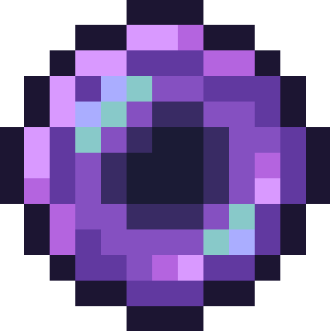Dark Lantern: This lamp obviously does not emit any type of light, it only serves for this table and for decoration.
 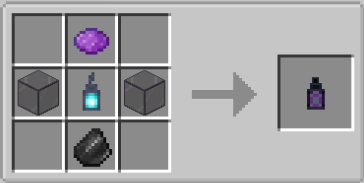
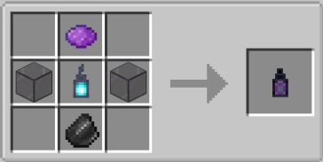
Dark altar: In this new table you will have to add three Enderman essences and a dark lamp to summon the new miniboss, the Dark Golem.
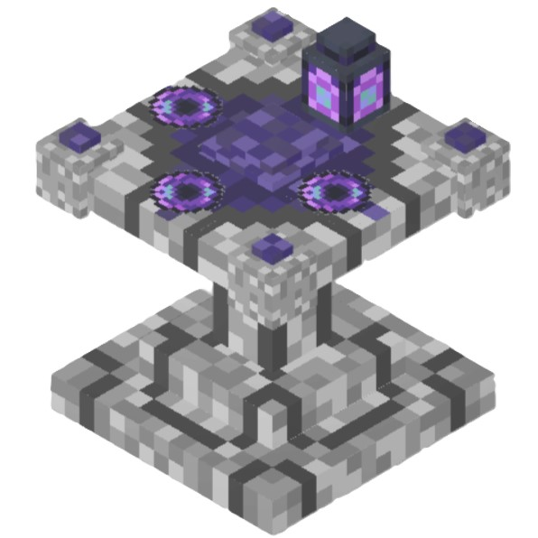 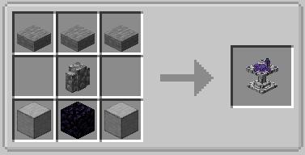Dark Golem: This is the miniboss that comes out when you summon it with the dark altar. And it has these characteristics:
- Life: 150pts.
- Experience at death: 20pts.
- Movement
speed: 0.15
- Step height: 1
- Follow-up range: 16 blocks
-
Tracking range: 64 blocks
- Attack strength: 20pts.
- Armor
protection: 3pts.
- Attack recoil: 0.8pts.
- Recoil
resistance: 1.5pts.
- Immune to arrows, falling damage and
drowning.
Dark Essence: This item will be dropped by the Dark Golem upon death, and can be used at the blacksmith table to upgrade your netherite weapon by 50%.
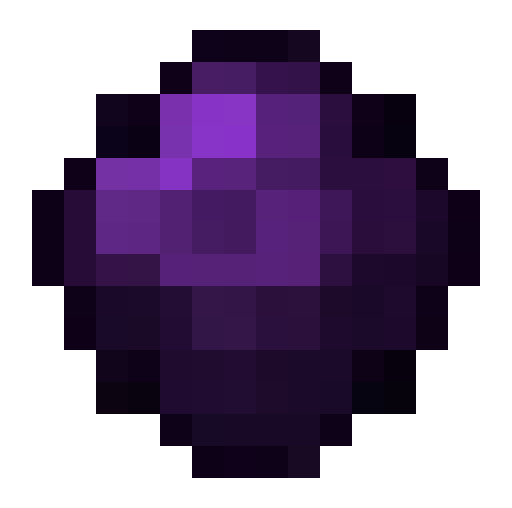Dark rod fragment: This ore is released by the Dark rod fragment ore, and can only be smelted in a blast furnace.
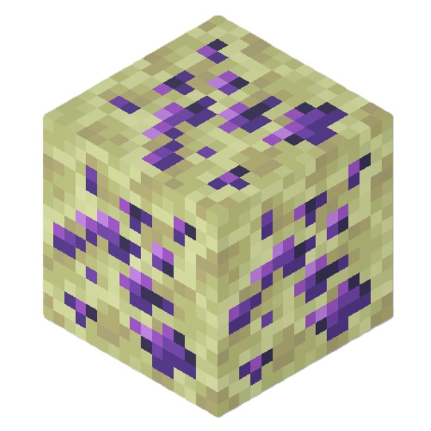 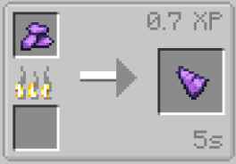Dark rod fragment block: This block is made with Dark Rod Fragment.
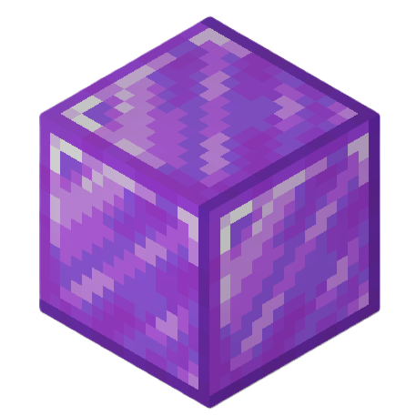 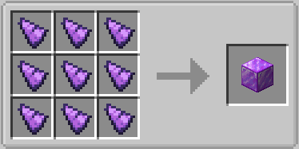Dark rod: Four Dark rod fragments are needed to make this Dark rod.
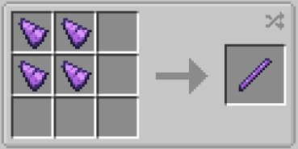Cursed sword: This is a new sword. And it has these characteristics:
- Efficiency: 12pts.
- Enchantment: 2pts.
- Attack damage:
12pts.
- Attack speed: 2.4pts.
- Durability: 3046pts.
Cursed pickaxe: This is a new peak. And it has these characteristics:
- Efficiency: 13.5pts.
- Enchantment: 2pts.
- Attack damage:
9pts.
- Attack speed: 1.8pts.
- Durability: 3046pts.
Cursed axe: This is a new axe.And it has these characteristics:
- Efficiency: 13.5pts.
- Enchantment: 2pts.
- Attack damage:
15pts.
- Attack speed: 1.35pts.
- Durability: 3046pts.
Cursed shovel: This is a new shovel. And it has these characteristics:
- Efficiency: 13.5pts.
- Enchantment: 2pts.
- Attack damage:
7.5pts.
- Attack speed: 1.5pts.
- Durability: 3048pts.
Cursed hoe: This is a new hoe. And it has these characteristics:
- Efficiency: 13.5pts.
- Enchantment: 2pts.
- Attack damage:
6pts.
- Attack speed: 1.5pts.
- Durability: 4062pts.
Cursed armor: This is a new armor. And it has these characteristics:
- Total durability: 55pts.
- Helmet damage reduction: 4pts.
-
Chestplate damage reduction: 12pts.
- Leggings damage reduction:
9pts.
- Boots damage reduction: 4pts.
- Enchantment:
22pts.
- Hardness: 4.5pts.
- Thrust resistance: 0.15pts.
 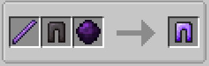
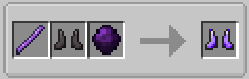
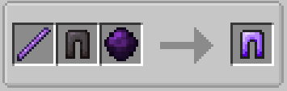
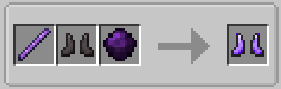
Cursed flint and steel: This lighter is used to open the portal to the Deep Void. It can be obtained in two ways:
1. When you obtain all the armor, you will be awarded an achievement
that will give you the Cursed Flint, and when you obtain the Cursed
Sword, the Cursed Pickaxe, and the Cursed Axe, you will be awarded
another achievement that will give you the Cursed Steel.
2. With
the “Darf Furnace” you can melt down armor and the three tools, and
there is a 20% chance that you will get Cursed Flint and Cursed Steel.
This method is for when your lighter breaks.
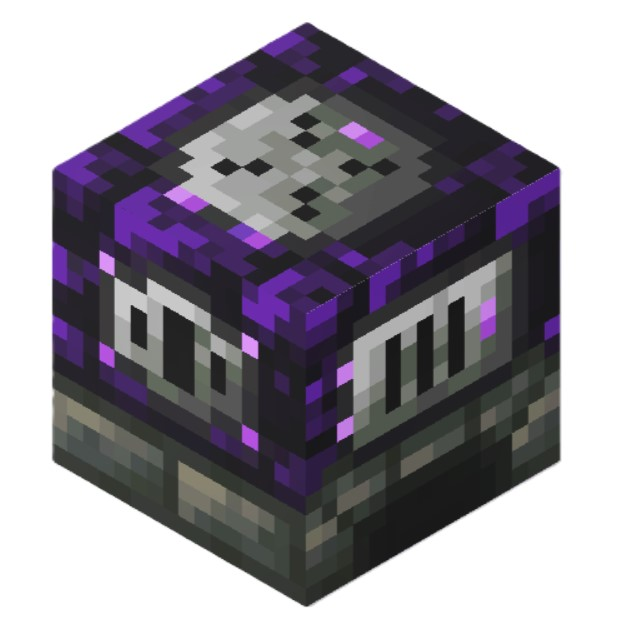 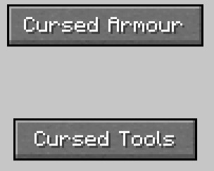 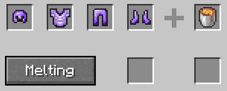 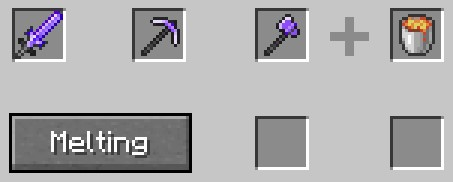
Deep Void:
Obscurita ingot and Obscurita nugget: The Obscurite ingot is made by melting in a blast furnace a Raw Obscurite. And the Obscurite nugget is made like any other nugget.
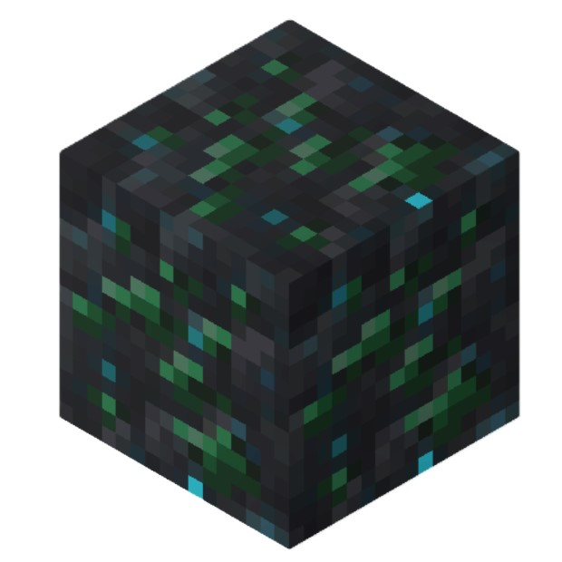 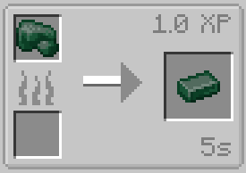 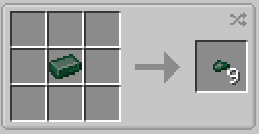Obscurita armor: This is a new armor called Obscurita armor. And it has these characteristics:
- Total durability: 22pts.
- Helmet damage reduction: 2pts.
-
Chestplate damage reduction: 6pts.
- Leggings damage reduction:
5pts.
- Boots damage reduction: 2pts.
- Enchantment:
13pts.
- Hardness: 2.25pts.
- Thrust resistance:
0.125pts.
- Effects: Removes blindness and adds night vision.
Dark Ring, Lapis Lazuli Pearl and Lapis Lazuli Fragment:The Dark Ring is a ring that you can cast a spell on, giving it unlimited uses and a 3-second cooldown. The default key to use it is the tab key. It is crafted as follows:
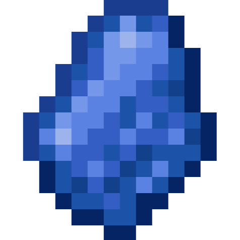 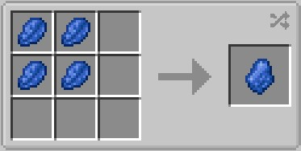 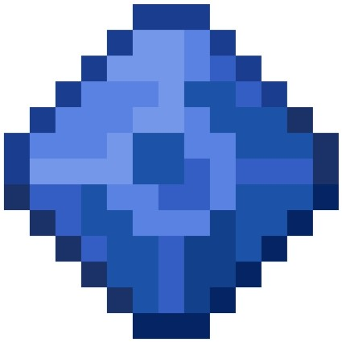 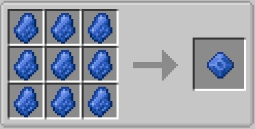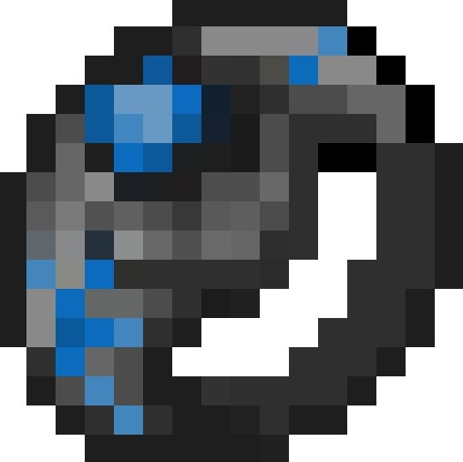 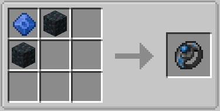
Oscube: This is a mob that lives in the Deep Void dimension and always stays still, so you can only tell it apart if you try to mine it or hit it. It is very easy to find, as it is generated with a 25% probability and in groups of 1 to 4. When you damage it, it runs away and after a few seconds it comes back and attacks you. And it has these characteristics:
- Life: 16pts.
- Experience at death: 1pts.
- Movement
speed: 0.3
- Step height: 0.6
- Follow-up range: 16
blocks
- Tracking range: 64 blocks
- Attack strength:
4pts.
- Armor protection: 0pts.
- Attack recoil: 0pts.
-
Recoil resistance: 0pts.
Mimetization Cristal: It is obtained with a 10% chance of defeating an Oscube, and by right clicking on this crystal you become invisible for 10 seconds.
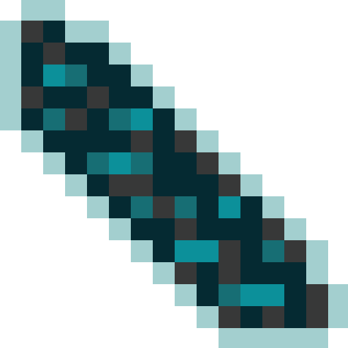Deependerman: This new type of Enderman is stronger and faster than a normal Enderman. They only appear in the Deep Void, and their spawn rate is very low (7%). And it has these characteristics:
- Life: 50pts.
- Experience at death: 6pts.
- Movement
speed: 0.3
- Step height: 0.6
- Follow-up range: 16
blocks
- Tracking range: 64 blocks
- Attack strength:
20pts.
- Armor protection: 17pts.
- Attack recoil: 0pts.
-
Recoil resistance: 0pts.
- Immune to arrows, falling damage
Immortal Cristal: It is obtained with a 10% chance of defeating an Deependerman, and by right clicking on this crystal gives you the “Immortal effect” for 5 seconds.
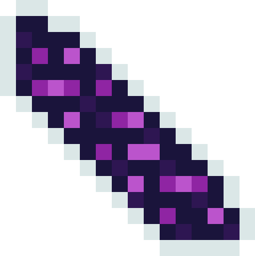Immortal effect: This is a new effect that gives you maximum level resistance during the seconds the potion lasts, and if you are attacked you will not take damage and you will be teleported to a random place in a radius of 3x3 blocks in the “x” and “z” axes.
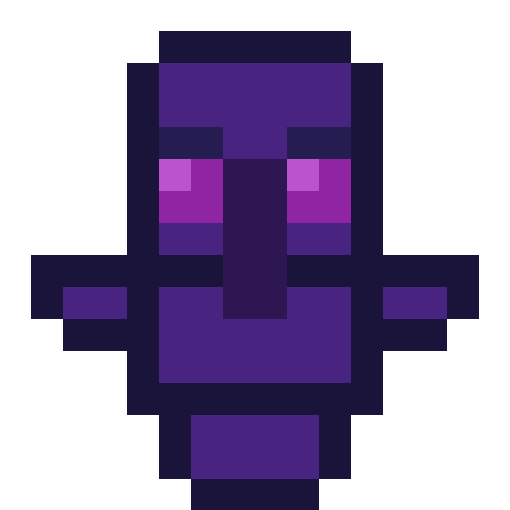Warden Boss: This is the new boss of this dimension. Its strongest attack is throwing rocks at its enemies. And it has these characteristics:
- Life: 250pts.
- Experience at death: 7000pts.
- Movement
speed: 0.3
- Step height: 1
- Follow-up range: 16 blocks
-
Tracking range: 64 blocks
- Attack strength: 40pts.
- Armor
protection: 10pts.
- Attack recoil: 4pts.
- Recoil
resistance: 100pts.
- Immune to fire, suffocation
Sculk Rock Cristal: It is obtained with a 40% chance of defeating an Warden Boss, and by right clicking on this crystal causes a giant block to appear above enemies and damages them.
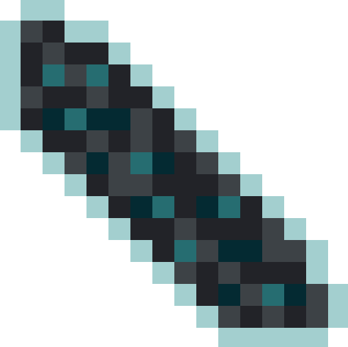Altar Wall Template: This item is found in the new Deep Void dungeon structure and is required to craft the Altar Wall.
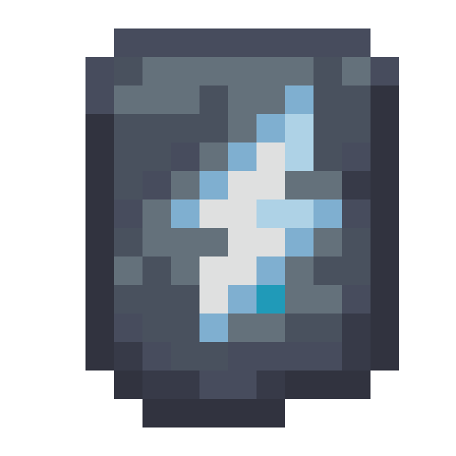Altar Wall: You need this block to activate the portal to the Paper Dimension.
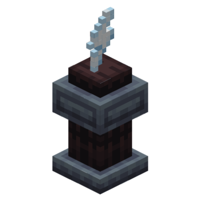Mache Altar: This block has two textures, one for when the portal is closed and another for when the portal is open. To activate the portal, you need to place Altar Walls at its corners. The block cannot be crafted, and to activate the portal, you must enter its interface.
Mache Portal Structure: This is the structure of the portal, and this is how the Altar walls must be placed so that the portal can be activated.
Paper dimension:
Mache pack: This wood pack is only found in the Paper dimension and is much less resistant than oak wood. The stairs, slab, fence, fence gate, pressure plate, and button all look the same as the plank.
Bamboo Paper and Mache Paper: These are two new types of paper needed to make the Mache Paper Block.
Mache Paper Block: These blocks are made of paper, so they are not very resistant, and fire spreads through them very quickly. To get blocks of different colours, you have to place the Mache Paper Block and, next to it, a black dye, a red dye, an orange dye, a yellow dye or a blue dye.